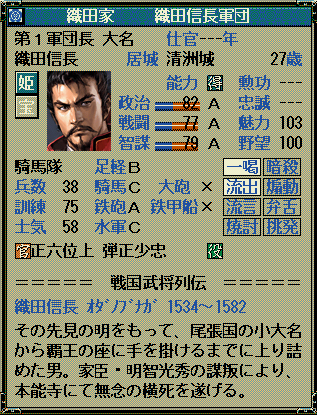

<dl>
    <dt>
    <div class="download_file">DOWNLOAD ⇒ <a href="%(file)s">天翔 ゴシックフォント</a>ファイル。</div>
    </dt>
    <dd>
    <div class="update_time">└更新日 %(year)04d/%(mon)02d/%(mday)02d</div>
    </dd>
</dl>

<h4>専用フォントへの切り替え</h4>
<ol>
    <li>インストール方法は、通常のフォントと同じです。｢tsgothic.ttf｣ファイルを｢C:\WINDOWS\Fonts｣フォルダにペーストすると、自動的にインストールされます。<br>
    <li>｢天翔 ゴシック｣フォントの基本は、｢ＭＳ ゴシック｣を分割し、不要なものを除去し、別名を付けたものです｡<br>
    <ol>
        修正点
        <li>｢○」と「×」の２つの文字について、右に１ピクセルずらすことで、文字の左が切れることないよう、見栄えを良くしています。<br>
        <li>半角カタカナ(句読点等も含む)も、右に１ピクセルずらすことで、文字の左が切れることないよう、見栄えを良くしています。<br>
        <li>半角アルファベット(周辺の半角記号含む)も、右に１ピクセルずらすことで、文字の左が切れることないよう、見栄えを良くしています。<br>
        <li>半角数字も、右に１ピクセルずらすことで、文字の左が切れることないよう、見栄えを良くしています。<br>
    </ol>
    <li>その他の、解説は、<a href="?page=nobu_font_tsmincho">｢天翔 明朝｣の解説</a>と同じとなります。｢天翔 明朝｣を｢天翔 ゴシック｣と読み替えてください。
    <br><br>
    <li>全体に対するフォントの雰囲気は下記のようになります。<br><br>
    

    </ol></ol>
